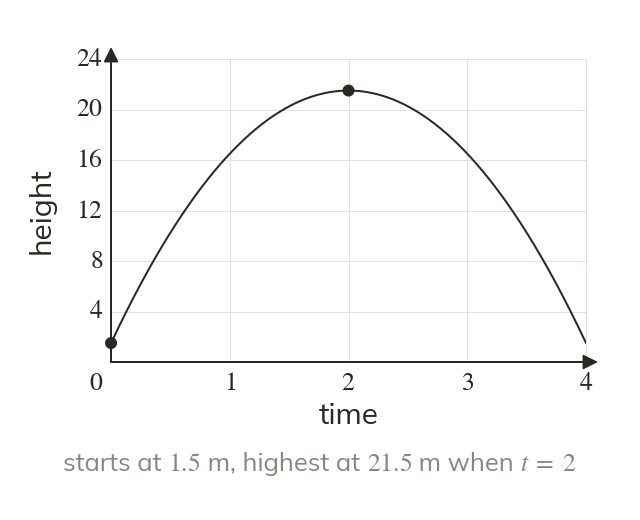
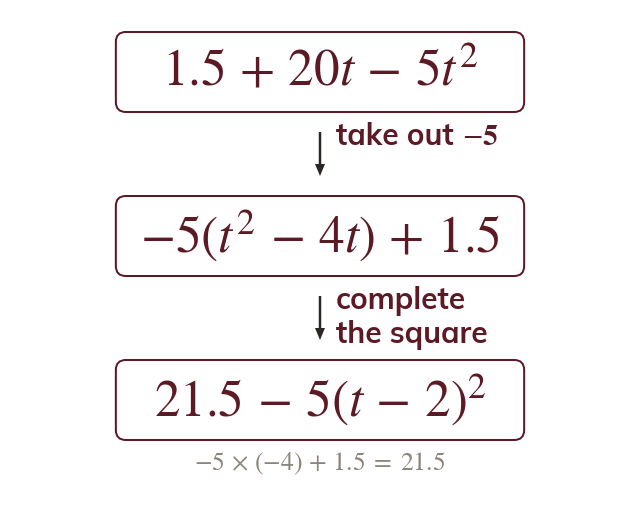
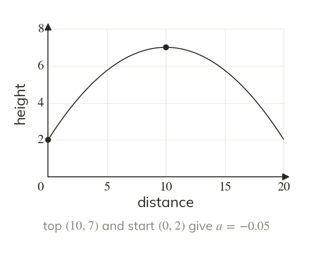
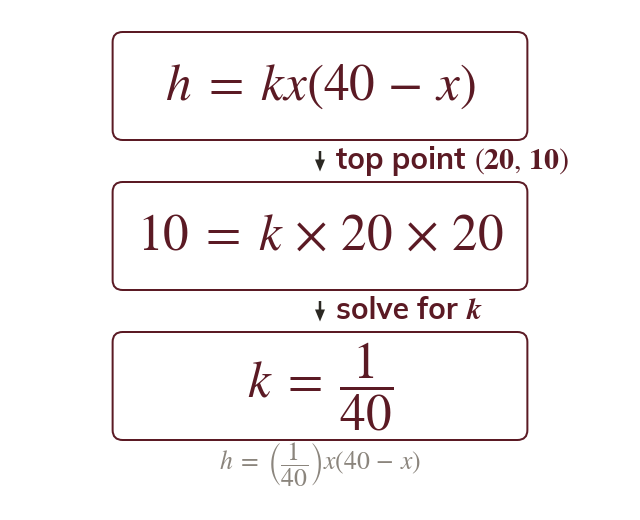
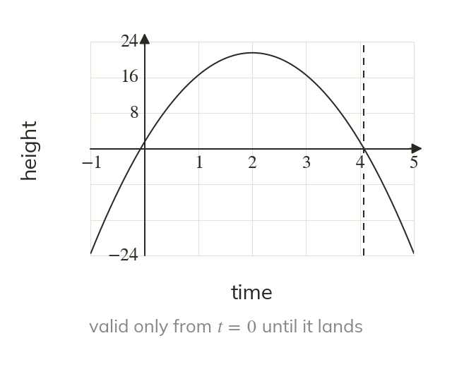

Every constant means something
In the is the height when where the ball starts. The model is ∩-shaped because the coefficient of is negative.
Quadratics model a ball in flight, an arch or a company's profit, and the exam asks what each constant means, where the maximum is and whether the model can be trusted. The chapter's methods all meet here, from factorising to the discriminant.
Work down the page at your own pace. Write every answer in your book first, then click to check it.
Read each card, then follow the worked examples one step at a time.

In the is the height when where the ball starts. The model is ∩-shaped because the coefficient of is negative.

Written as the square is zero when
So the greatest height is m, after s.
Pick an answer. If it's wrong, the feedback tells you which mistake it was.
Write the blanks in your book first, then tap each one to check.
Read each card, then follow the worked examples one step at a time.

A ∩-shaped path with its top at has the form with a negative. One more point on the path fixes a.

A path that is zero at two known places starts from those roots. A path landing at and is

A model holds only for some values, never for negative time or after the ball lands. Real objects also meet air resistance, wind and spin.
Pick an answer. If it's wrong, the feedback tells you which mistake it was.
Write the blanks in your book first, then tap each one to check.
Finished? Next lesson: 3.1 Linear Simultaneous Equations.
For each skill, tap the one that is true for you today. Your Revise pages start with anything you mark Not yet.
Your ratings are saved on this device only.
Log in, then search for a code to practise that skill.